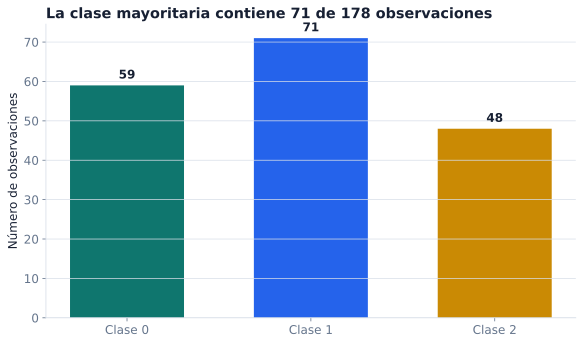

Capítulo 0: Antes de modelar
Observaciones, preguntas, referencias y conclusiones
Vista previa
Una tabla puede abrirse en pandas antes de que entendamos qué contiene. El código no impide confundir una vivienda con una subzona, una medición con una causa o una partición favorable con desempeño futuro. Este capítulo establece el lenguaje que usaremos para evitar esos errores.
Empezaremos con un recurso público de Bogotá. La Secretaría Distrital del Hábitat publica una caracterización de precios de vivienda nueva. Para el curso se congeló un subconjunto de 32 subzonas y siete columnas. La tabla es pequeña, pero obliga a hacer preguntas que seguirán siendo necesarias cuando haya millones de filas.
Objetivos del capítulo
Al terminar el capítulo deberías poder:
- identificar la unidad de observación y distinguirla de la población de interés;
- separar variables de entrada y objetivo sin perder su significado;
- formular una pregunta compatible con la información disponible;
- distinguir familia de modelos, parámetros e hiperparámetros;
- separar pérdida, métrica y baseline;
- explicar los papeles de entrenamiento, validación y prueba;
- reconocer filtración de información y cambios de distribución;
- escribir una conclusión cuyo alcance coincida con el experimento.
El primer objeto de un análisis no es el algoritmo. Es la unidad que fue observada y el procedimiento mediante el cual llegó a la tabla.
0.1 Una fila representa algo
Considere cinco filas del archivo congelado:
| subzona | precio_reportado | estrato_promedio | area_promedio | alcobas_promedio | banos_promedio | parqueaderos_promedio |
|---|---|---|---|---|---|---|
| Rosales | 16.365 | 5.922 | 177.316 | 2.673 | 3.776 | 2.981 |
| Chicó | 13.939 | 5.905 | 128.044 | 2.225 | 3.105 | 2.152 |
| Bosque Medina | 10.751 | 4.699 | 151.226 | 2.533 | 3.037 | 2.467 |
| Multicentro | 10.365 | 5.647 | 94.071 | 2.086 | 2.625 | 1.786 |
| Centro | 9.504 | 3.195 | 63.383 | 1.744 | 1.799 | 0.988 |
Cada fila representa una subzona. Las columnas numéricas son resúmenes de esa subzona; no son mediciones de una vivienda individual.
Definición 0.1: unidad de observación.
La unidad de observación es la entidad o el evento representado por una fila. Puede ser una persona, una transacción, una imagen, un día, una vivienda o, como en este caso, una subzona agregada.
La definición no queda completa con un sustantivo. También importa cómo fue registrada la unidad, en qué periodo y bajo qué criterios de inclusión.

Lectura de la figura. Los puntos permiten comparar el orden y la dispersión del campo dentro de estas 32 filas. No permiten valorar una vivienda ni asignar al eje una unidad que la fuente no especifica.
Una columna necesita documentación
El nombre area_promedio sugiere un significado, pero todavía deja preguntas:
- ¿área construida, privada o vendible?;
- ¿promedio simple o ponderado?;
- ¿qué periodo cubre?;
- ¿qué proyectos entraron?;
- ¿cómo se trataron faltantes y valores extremos?
El archivo original llama precios al objetivo y no documenta su unidad en el recurso descargado. Para conservar esa limitación, el subconjunto del curso usa el nombre precio_reportado. No afirmaremos que son pesos, millones de pesos ni precio por metro cuadrado.
Definición 0.2: variable observada.
Una variable observada es un atributo registrado para las unidades de una tabla. Su interpretación requiere nombre, tipo, unidad cuando exista, procedimiento de medición y momento de disponibilidad.
Muestra y población
Las 32 filas son la muestra disponible para este ejemplo. Una población de interés podría ser más amplia: todas las subzonas de Bogotá en cierto periodo, todos los proyectos de vivienda nueva o todas las viviendas. Esas poblaciones no son intercambiables.
Definición 0.3: muestra y población de interés.
La muestra es el conjunto de unidades observadas. La población de interés es el conjunto de unidades sobre el cual quisiéramos sostener una conclusión. Pasar de la muestra a la población exige supuestos sobre cobertura, selección y comparabilidad.
Una muestra grande no corrige por sí sola una selección inadecuada. Tampoco una muestra pequeña es inútil: puede servir para aprender un método o plantear una pregunta estrecha, siempre que se declare su alcance.
Punto de control 0.1
Para el archivo de Bogotá, responda:
- ¿Qué representa una fila?
- ¿Qué información adicional pediría para interpretar
precio_reportado? - ¿Qué población podría interesar y qué impide afirmar que la muestra la representa?
- ¿Por qué sería un error llamar “precio de una vivienda” al objetivo?
0.2 De una pregunta amplia a una tarea
“Analizar vivienda en Bogotá” no especifica qué se quiere obtener. Una pregunta de modelación necesita al menos cuatro componentes:
Unidad + salida + momento de predicción + uso previsto.
Una formulación compatible con el ejemplo sería:
Para una subzona descrita por los promedios disponibles, estimar el indicador
precio_reportadoy comparar el error fuera del ajuste con predecir la media de entrenamiento.
Esta pregunta no promete valorar viviendas particulares ni explicar efectos causales.
Familias de tareas
| Pregunta | Salida | Familia |
|---|---|---|
| estimar una cantidad | número continuo | regresión |
| asignar una categoría | etiqueta | clasificación |
| buscar estructura sin etiqueta | grupo o representación | aprendizaje no supervisado |
| ordenar alternativas | puntaje o rango | recomendación / ranking |
El nombre de una biblioteca no define la tarea. Primero se fija la salida y luego se elige una familia de modelos compatible.
Ejemplo 0.1: dos preguntas distintas sobre la misma tabla.
Con variables químicas de vinos podemos preguntar por una clase de cultivar (clasificación) o por una concentración continua (regresión). La tabla no determina la pregunta de manera automática.
Predicción no es causalidad
Una asociación observada puede ayudar a predecir sin identificar qué ocurriría al intervenir. Si estrato_promedio y precio_reportado cambian juntos, una regresión puede aprovechar la asociación. No se sigue que modificar administrativamente el estrato produzca el cambio predicho.
Una pregunta causal necesita un diseño y supuestos adicionales: definición de la intervención, comparabilidad de grupos, control de confusión y un argumento sobre el mecanismo de asignación.
0.3 De la tabla a símbolos
En un problema supervisado con \(m\) observaciones y \(d\) variables de entrada, escribimos
\[ X\in\mathbb R^{m\times d}, \qquad y\in\mathbb R^m. \]
La fila \(x_i^\top\) describe la observación \(i\) y \(y_i\) es su objetivo observado. Para el caso de Bogotá podríamos seleccionar:
features = [
"estrato_promedio",
"area_promedio",
"alcobas_promedio",
"banos_promedio",
"parqueaderos_promedio",
]
X = tabla[features]
y = tabla["precio_reportado"]Entonces X.shape == (32, 5) y y.shape == (32,).
Al convertir una tabla a numpy, las formas y valores permanecen, pero los nombres, unidades y metadatos pueden desaparecer. Deben conservarse en el código o en un manifiesto separado.
Observaciones y variables aleatorias
La notación minúscula \(x_i,y_i\) se refiere a valores registrados. Para razonar sobre un caso aún no observado usaremos mayúsculas:
\[ (X,Y) \quad\text{antes de observar}, \qquad (x_i,y_i) \quad\text{después de registrar la fila } i. \]
Una variable aleatoria no es una columna “con ruido agregado”; es una función que representa el resultado incierto de un proceso. El Interludio 0.5 desarrolla esta distinción y conecta muestra, distribución y riesgo esperado.
0.4 Modelo, parámetros y predicción
Un modelo es una familia de funciones indexada por parámetros:
\[ f_\theta:\mathcal X\longrightarrow\mathcal Y. \]
Después del ajuste obtenemos \(\widehat\theta\) y calculamos
\[ \widehat y=f_{\widehat\theta}(x). \]
| Objeto | Ejemplo | Cómo se fija |
|---|---|---|
| familia | funciones lineales | elección de modelación |
| parámetro | coeficientes \(\theta\) | ajuste con entrenamiento |
| hiperparámetro | intensidad de regularización | selección con validación |
| predicción | \(f_{\widehat\theta}(x)\) | evaluación con parámetros ya fijados |
Definición 0.4: parámetro.
Un parámetro es una cantidad interna que el procedimiento estima a partir de los datos de entrenamiento. Los coeficientes de una regresión y los pesos de una red neuronal son parámetros.
Definición 0.5: hiperparámetro.
Un hiperparámetro controla el procedimiento o la complejidad y se elige fuera del ajuste ordinario de parámetros, por ejemplo con un conjunto de validación.
Ajustar y usar son operaciones distintas
Durante el ajuste:
\[ (X_{\mathrm{train}},y_{\mathrm{train}}) \longmapsto \widehat\theta. \]
Durante el uso:
\[ x_{\mathrm{nuevo}} \longmapsto f_{\widehat\theta}(x_{\mathrm{nuevo}}), \]
con \(\widehat\theta\) fijo. Si modificamos el modelo después de mirar el resultado del caso nuevo, ya no estamos describiendo el mismo procedimiento.
0.5 Pérdida, métrica y baseline
Estos tres objetos responden preguntas diferentes.
Definición 0.6: pérdida.
Una pérdida asigna un costo numérico a una predicción y su resultado observado. El algoritmo de entrenamiento suele minimizar un promedio de pérdidas.
Definición 0.7: métrica.
Una métrica resume un aspecto del comportamiento del modelo para comparar o reportar resultados. Puede coincidir con la pérdida, pero no tiene que hacerlo.
Definición 0.8: baseline.
Un baseline es una regla simple, calculada sin información indebida, que proporciona un punto de comparación.
Referencias simples
En regresión, un baseline frecuente predice la media de entrenamiento:
\[ \widehat y_i^{\mathrm{base}}=\overline y_{\mathrm{train}}. \]
En clasificación, puede predecir la clase más frecuente de entrenamiento. Estas reglas no usan las variables de entrada; por eso ayudan a determinar si un modelo extrae información adicional.
Dos métricas de regresión son
\[ \operatorname{MAE} =\frac1m\sum_{i=1}^{m}|y_i-\widehat y_i|, \]
\[ \operatorname{MSE} =\frac1m\sum_{i=1}^{m}(y_i-\widehat y_i)^2. \]
MAE se expresa en las unidades del objetivo; MSE, en unidades al cuadrado. Si la unidad del objetivo no está documentada, tampoco podemos inventarla al interpretar la métrica.
En clasificación, accuracy es
\[ \operatorname{accuracy} =\frac{\text{número de aciertos}}{\text{número de casos evaluados}}. \]
Puede ser engañosa cuando una clase domina. Una matriz de confusión permite ver qué clases se confunden.
0.6 Separar ajuste, selección y estimación final
Cuando el tamaño lo permite, distinguimos tres papeles:
| Conjunto | Uso permitido |
|---|---|
| entrenamiento | ajustar parámetros y transformaciones aprendidas |
| validación | elegir hiperparámetros, variables, modelos o umbrales |
| prueba | estimar una vez el desempeño del procedimiento ya fijado |
Regla de prueba. Si una elección cambió después de consultar test, test participó en el diseño y dejó de ser una estimación final independiente.
Filtración de información
Hay leakage cuando el entrenamiento usa información que no estaría disponible en el momento real de predecir o que pertenece a observaciones reservadas.
Ejemplos:
- estandarizar con media y desviación de toda la tabla;
- imputar faltantes antes de separar y usando test;
- incluir una variable registrada después del resultado;
- duplicar a la misma persona en entrenamiento y prueba;
- escoger el modelo o el umbral por su desempeño en test.
Una transformación determinista como elevar una columna al cuadrado no aprende información de otras filas. Por sí sola no produce leakage. En cambio, medias, categorías aprendidas, imputaciones y selección de variables deben ajustarse dentro de cada partición de entrenamiento.
Cambio de distribución
Separar datos no garantiza que el futuro se parezca al pasado. Podemos escribir
\[ (X,Y)_{\mathrm{train}}\sim P_{\mathrm{train}}, \qquad (X,Y)_{\mathrm{uso}}\sim P_{\mathrm{uso}}. \]
Una evaluación histórica informa sobre el uso previsto cuando esas distribuciones son suficientemente comparables. Cambios de población, instrumento, periodo o política pueden romper esa comparación.
0.7 Primer experimento: load_wine
El conjunto load_wine incluido en scikit-learn contiene 178 vinos, trece mediciones químicas y tres clases. Cada fila es un vino analizado. Es un ejemplo limpio y local para aprender el procedimiento; no representa por sí solo un sistema operativo actual.

El siguiente código fija una partición estratificada, construye el baseline y ajusta una tubería de referencia:
from sklearn.datasets import load_wine
from sklearn.dummy import DummyClassifier
from sklearn.linear_model import LogisticRegression
from sklearn.metrics import accuracy_score, confusion_matrix
from sklearn.model_selection import train_test_split
from sklearn.pipeline import make_pipeline
from sklearn.preprocessing import StandardScaler
wine = load_wine(as_frame=True)
X = wine.data
y = wine.target
X_train, X_test, y_train, y_test = train_test_split(
X,
y,
test_size=0.25,
random_state=2105,
stratify=y,
)
baseline = DummyClassifier(strategy="most_frequent")
baseline.fit(X_train, y_train)
pred_baseline = baseline.predict(X_test)
modelo = make_pipeline(
StandardScaler(),
LogisticRegression(max_iter=2000),
)
modelo.fit(X_train, y_train)
pred_modelo = modelo.predict(X_test)La tubería aprende el escalamiento solo con X_train. En las 45 observaciones de test, el baseline acierta 18 y el modelo acierta 44:
| Método | Aciertos | Accuracy |
|---|---|---|
| clase mayoritaria | 18 de 45 | 0.400 |
| regresión logística | 44 de 45 | 0.978 |
Localizar el error

La conclusión que admiten estos resultados es estrecha:
En la partición con semilla 2105, la tubería acierta 44 de 45 observaciones, frente a 18 del baseline. El único error confunde una observación de clase 1 con clase 2. No se evaluaron mediciones de otro laboratorio, región o periodo.
La última oración no es un adorno. Delimita qué cambio de distribución quedó sin examinar.
0.8 Escribir a partir de resultados
Una conclusión útil contiene cuatro piezas:
- qué se predijo y sobre qué unidades;
- contra qué baseline se comparó;
- qué métrica o error concreto se observó;
- qué condición limita el alcance.
Compare:
El modelo es casi perfecto.
con
En 45 vinos reservados, el modelo acertó 44 y superó al baseline de 18 aciertos; falta estudiar otras particiones y datos de otra procedencia.
La segunda frase permite reconstruir el denominador, la referencia y la pregunta que sigue abierta.
0.9 Errores que conviene detectar temprano
Error 1: empezar por el algoritmo
“Quiero usar redes neuronales” no identifica unidad, salida ni momento de uso.
Error 2: tratar el nombre de una columna como documentación
Un nombre orienta; no sustituye unidad, periodo, procedimiento ni cobertura.
Error 3: confundir pérdida y métrica
Un clasificador puede ajustarse con log-loss y reportarse con matriz de confusión, recall o un costo específico.
Error 4: omitir el baseline
Una métrica aislada no dice qué información adicional aportó el modelo.
Error 5: usar test para escoger
Probar muchas configuraciones en test transforma la estimación final en parte del diseño.
Error 6: confundir predicción y causalidad
Un coeficiente o una asociación puede ayudar a anticipar resultados sin describir el efecto de intervenir.
Resumen del capítulo
- Una fila representa una unidad registrada bajo un procedimiento concreto.
- La muestra observada y la población de interés no son lo mismo.
- Nombres, unidades, periodo y procedencia acompañan a los valores.
- Una pregunta fija unidad, salida, momento de predicción y uso previsto.
- En aprendizaje supervisado separamos \(X\) y \(y\).
- Familia, parámetros e hiperparámetros se fijan de maneras distintas.
- Pérdida, métrica y baseline responden preguntas diferentes.
- Entrenamiento ajusta, validación selecciona y test estima al final.
- Leakage y cambio de distribución pueden invalidar una evaluación.
- Una conclusión incluye denominador, referencia, error y límite.
Términos clave
- Unidad de observación: entidad o evento representado por una fila.
- Muestra: conjunto de unidades efectivamente observadas.
- Población de interés: conjunto sobre el que se desea sostener una conclusión.
- Variable objetivo: salida observada que se intenta predecir.
- Parámetro: cantidad estimada durante el ajuste del modelo.
- Hiperparámetro: configuración seleccionada fuera del ajuste ordinario.
- Baseline: regla simple usada como referencia.
- Leakage: acceso a información que no correspondería al entrenamiento.
- Cambio de distribución: diferencia entre el proceso observado y el de uso.
Ejercicios
Conceptos
- En un registro de viajes de taxi, proponga una unidad de observación y cuatro variables. ¿Qué alternativa de unidad produciría otra tabla distinta?
- Explique por qué “32 subzonas” no significa “32 viviendas”.
- Distinga variable observada y variable aleatoria con un ejemplo propio.
- Dé un ejemplo de parámetro y de hiperparámetro para regresión lineal regularizada.
- Explique por qué una transformación aprendida debe ajustarse dentro de train.
Cálculo manual
- Para \(y=(4,7,9,10)\) y \(\widehat y=(5,6,8,12)\), calcule MAE y MSE.
- En una clasificación hay 50 casos de clase A, 30 de B y 20 de C. ¿Cuál es la accuracy de predecir siempre A?
- En test hay 45 observaciones y 44 aciertos. Calcule accuracy y su error complementario.
Interpretación
- Un modelo obtiene accuracy 0.84 y el baseline 0.82. Escriba tres preguntas antes de afirmar que la diferencia importa.
- Un modelo de regresión obtiene MAE 12. ¿Qué información falta para interpretar esa cifra?
- Redacte una conclusión de tres oraciones para un modelo que supera el baseline en ocho observaciones de test.
Código
- Cargue el CSV de Bogotá y confirme forma, nombres y faltantes.
- Modifique
random_stateen el ejemplo Wine y compare matrices de confusión. No seleccione la semilla con mejor resultado. - Retire
stratify=yy compare proporciones de clase en train y test.
Proyecto
- Para una idea de proyecto, identifique fuente, unidad de observación, objetivo, momento de predicción, baseline y limitación inicial.
- Escriba una variable que produciría leakage porque se conoce después del resultado.
Respuestas seleccionadas
6. Los errores absolutos son \((1,1,1,2)\), de modo que \(\operatorname{MAE}=1.25\). Los errores cuadrados son \((1,1,1,4)\), de modo que \(\operatorname{MSE}=1.75\).
7. La clase mayoritaria contiene 50 de 100 casos; la accuracy del baseline es \(0.50\).
8. La accuracy es \(44/45\approx0.978\) y el error es \(1/45\approx0.022\).
10. Hace falta conocer la escala y unidad del objetivo, el baseline, el tamaño de evaluación, la distribución de errores y el costo práctico de una desviación de 12 unidades.